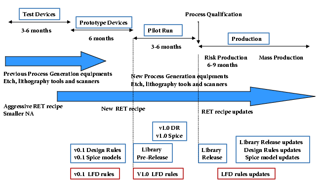

Calibre LFD
rules and models evolve with your process. You create your preliminary
process-specific Calibre LFD design kit (rules, models, and RET
recipe) based on knowledge of similar processes and existing equipment.
As the process matures, you update the Calibre LFD rules to reflect
the current level of understanding.
Once the Calibre LFD checks are
deemed complete, slight changes in the process can be accounted
for immediately by updating the models used by Calibre LFD. This
permits a more efficient connection between the process state and
the verification tools.
Figure 1. Calibre LFD Rules Evolve with Your Process